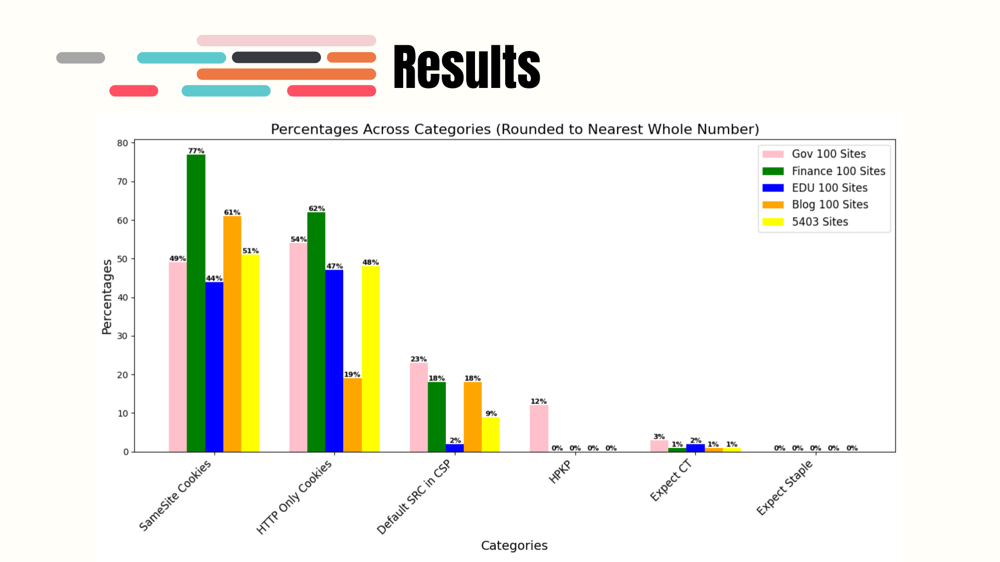

Research
This section highlights a sample research project that demonstrates data analysis and visualization using Python. The script processes raw input and outputs visual trends observed in the dataset. It also highlights a trend of sites that ignore important security headers like SameSite and HTTPOnly Cookies.
Results Summary
The image showcases the key findings from the research, including sites lacking proper security headers. Note: HPKP, Expect CT, and Expect Staple are depreciated.
